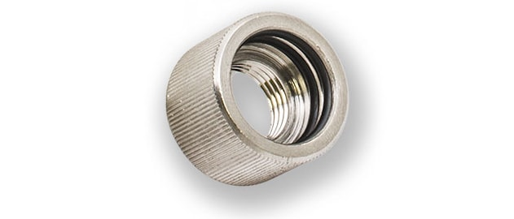
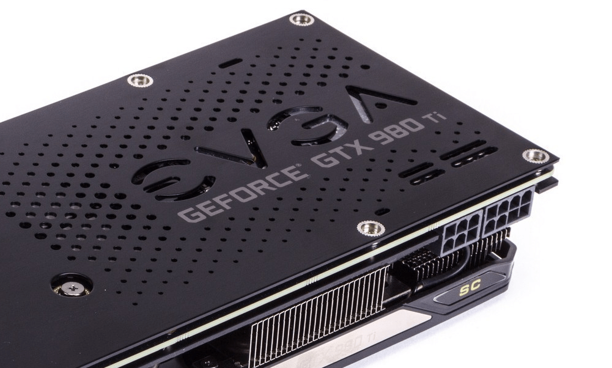
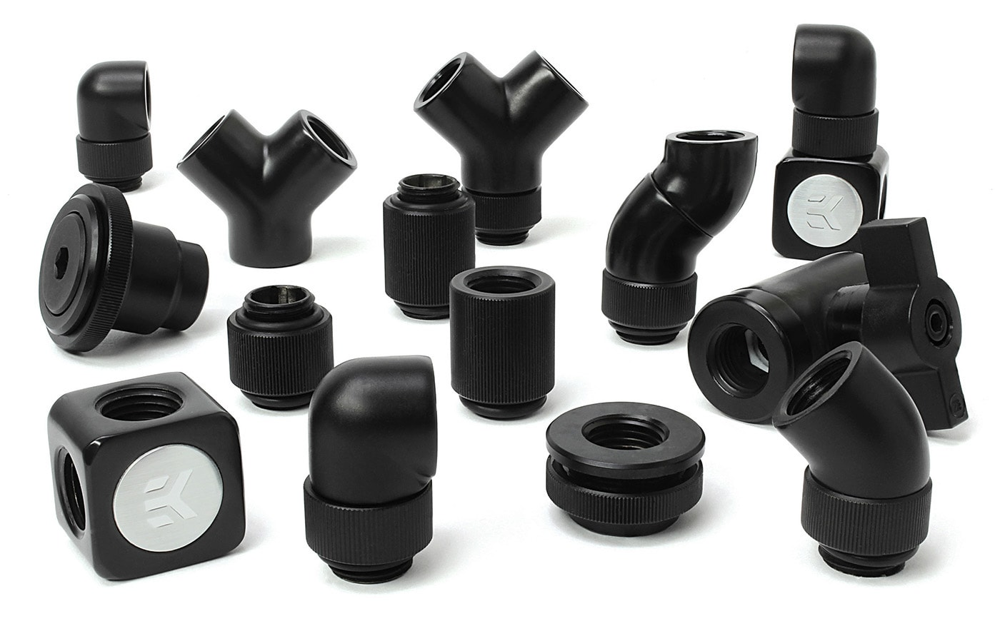
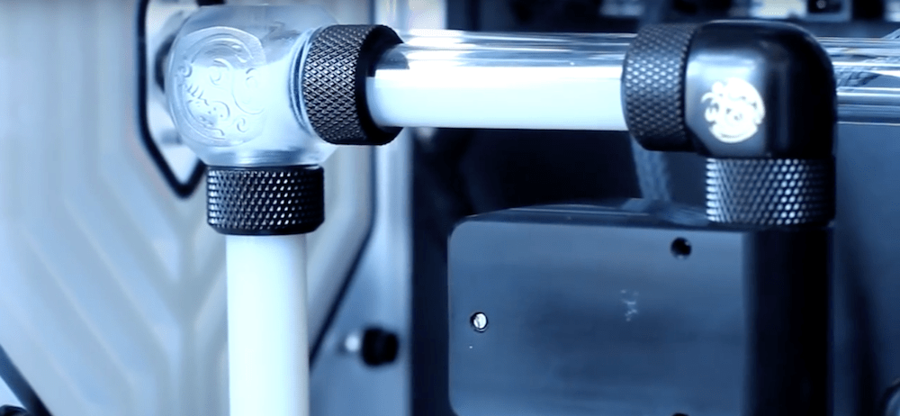

Project 3
HOW TO DESIGN AND BUILD A CUSTOM WATER COOLING LOOP
Table of Contents
- PART 1: LIQUID COOLING BASICS
- PART 2: THE PARTS NEEDED AND THEIR JOBS
- PART 3: OPTIONAL ADDITIONS TO YOUR LOOP
- PART 4: PLANNING YOUR LOOP
- PART 5: ASSEMBLING THE LOOP
- PART 6: FILLING, PRIMING, and TESTING
- PART 7: MAINTENANCE AND UPKEEP
- PART 8: ADDITIONAL RESOURCES
Part 1: Liquid Cooling Basics

This particular build is an incredible example of what can be done, and the stunning visual appeal that can be created. The builder custom made a reservoir to highlight the dual nature his loop with two different colored coolants.
This boils down to the laws of thermodynamics. If you have studied chemistry you will be acquainted with the term specific heat. The specific heat of a given substance is characterized as such: specific heat is the amount of energy required to raise 1g of a substance 1°C. Therefore, a substance having a higher specific heat would require more energy to raise the temperature the same amount as a substance with a lower specific heat. Given that water has a specific heat about 4 times that of air, significantly more energy, or average kinetic energy (also known as temperature) is required to change its temperature.
This is the crux of water cooling and why it works. Because water cooling works by, at a basic level, pumping water past your components to keep them cool, using water which stays cooler easier than air is evidently more efficient.
Now that we understand how water cooling is more efficient we can talk about its advantages and disadvantages.
| Advantages | Disadvantages |
|---|---|
|
|
Now for the disadvantages. Like every custom project, this will involve time and effort. This is the major hurdle for most people, they just do not understand how it is done or are afraid to break their build. Water cooling will take significant planning, assembly, and maintenance over time, but the results to many are worth it. The other disadvantage is the price. For $20 you can get a fantastic air cooler (such as the Cooler Master Hyper 212 EVO). This is a killer heatsink and will allow you to get some decent overclocks. Water cooling, however, can cost a lot of money once all the parts are purchased, and effectively will only grant you a marginal performance gain.
Now that you understand the concept and are aware of the disadvantages it is time to learn how to actually plan and build your loop.
Part 2: The Parts Needed and Their Jobs

To build a custom loop you will need many parts, in fact you will probably need more parts for your loop than you did for your entire build. First I will start out by listing general categories and then going more in depth.
Water Blocks
Water blocks are the heart of a liquid cooling build, they are what the cooled water is actually pumped through. Water blocks are made for many different parts of the build, but only a few are necessary:
- CPU Blocks- these are the most important as the CPU needs to be cooled the most since it all high end CPUs will not include a cooler and will likely be overclocked the most. These are pretty straight forward to pick, find a good brand and model, then just pick the one for your socket.
- GPU Blocks-Graphics cards produce the most amount of heat, and therefore it may be nice to water cool them. However, if you bought a high end graphics card, it likely already has a great stock cooler and may not need water cooling unless you will be utilizing high overclocks. Keep in mind that there are two types of GPU blocks, full cover (covering the entire card/PCB), and those that just cover the chipset. The important thing here is just making sure the block is compatible if you go with a full-cover variant. Since it covers the whole PCB, and manufactures tweak this for every model or card, you need to make sure it fits your specific model. The key thing here is just to research and make sure it will fir your card. While full cover blocks look better, they are not made for even card, meaning you may have to go with a universal model.
- Motherboard Blocks- Motherboards can also be cooled. These water blocks can be sold as all-in-one (full cover) blocks, or as separate blocks. The water cooled parts of a motherboard are the same parts the factory cooling solution covers. This is typically the south bridge (PCH) chip, and the power control (VRM / MOSFETs) modules. Water cooling a motherboard is often more for aesthetic reasons, but can help with thermals.
- RAM Blocks- Memory sticks can also be water cooled, but really do not need to be unless you are trying to achieve very high overclocks, and really it just looks cooler than is really necessary.
- SSD Blocks- SSDs are the last component that is common to be water cooled. This is the least common as it really is unnecessary.
This brings up another advantage to water cooling- the thermal output by each component is less. What this means is that even if a graphics card has a very beefy cooler already and might not need the liquid cooling to keep its thermals under control, water cooling may still be necessary for thermal output concerns. Graphics cards output a lot of heat, especially with air coolers equipped with fans. In a high end build Crossfire of SLI is likely going to be used, and having 3 graphics cards stuck right next to each other means an extremely large c concentration of heat on those chips. Liquid cooling can remove some of the thickness spreading them apart and leaving them room to breath, but also collects the heat into the water instead of the air around the cards.
Generally, to reduce corrosion, people like to select blocks made of the same metal. For example, if you have a copper block on your CPU, try and get a copper block for your GPU as well. For nickel plated blocks, try and get blocks that are both nickel plated. This isn't a huge concern, but it's worth mentioning. Keep in mind that this is only a problem with metals. Delran or Acetal tops aren't going to have an effect on your loop metals.
- EK Waterblocks
- Alphacool
- Swiftech
- XSPC
- Bitspower
- Koolance
Fans/Radiators

The radiator, coupled with its attached fans, is what actually keeps the water cool as it flows through your loop. As the liquid flows through the copper tubing, the radiator fins absorb the heat from the water, then the fins are cooled by the fans attached to the radiator. Radiators come in multiple sizes, usually designed for a certain number of fans. For example, a 120mm radiator holds 1 120mm fan, and a 280mm radiator holds 2 140mm fans. Radiators can come in sizes large enough to accommodate 4 fans. The larger and thicker the radiator, the more effectively it will be able to dissipate heat. The amount of cooling capacity you have is dependent on the amount of radiators you can fit in your case. Make sure to choose a case that can fit the number of radiators you need (use this guide for help). Use this rough guide to determine how many radiators you need (keep in mind that if you have a high end card, or are trying to achieve high overclocks you may want more radiators and fans, some high end builds use a double radiator per device)
- 1 device = 1 fan radiator
- 2 devices = 2 fan radiator
- 3 devices = 3 fan radiator
- 4 devices = 4 fan radiator
- 5+ devices = larger than 4 fans, or use multiple radiators

CFM vs. Static Pressure
Another consideration is the fans, and the FPI (fin per inch) measurement on the radiator. The higher the FPI the more dense the radiator fins are, and the more static pressure is needed. This brings us to types of fans. There are two types of fans, those optimized for air flow (volume of air a fan can move, measured in CFM) and static pressure. Fans optimized for air flow are measured for the amount of air a fan can move when no obstacles are in the way This is why static pressure fans are so important. Static pressure fans are slightly different and are designed to overpower obstacles, such as the fins on a radiator. Air flow optimized fans can be used for water cooling, but only for radiators with a low fin density. For radiators with high fin density you need static pressure fans, as described below:- Emphasize cooling performance and opt for the largest, highest fin density radiator allowable. Pair it with high static pressure fans. Generally, 120mm fans push more air than 140mm fans, but look at the Pa measurements however for exact values
- Emphasize lower noise levels by selecting a lower fin density radiator. Use medium airflow fans, or use a fan controller or PWM fans to slow down high airflow ones (look here on a guide to PWM fans). Generally, 140mm fans are quieter than 120mm fans.
Pumps
The pump is what actually circulates and forces the water around the loop. There are two main considerations when choosing a pump, the power, and the noise level.
Typically if you have a simple loop with only one or two devices almost any water cooling pump will suffice. However, if you have more devices you have to keep in mind that more power will be needed to keep the water flowing at a decent rate. Flow rate is the measurement of how much liquid a pump can move with no restriction. Usually measured in gallons/hour, flow rate doesn't tell you much unless you also know the head pressure, because no water loop is going to have 0 restriction.
Head pressure is how hard or high a pump can push liquid at full load (with 0 flow or 100% restriction). It's measured by seeing how high a pump can push water through a thin tube and is usually measured in feet or meters.
A pump with lots of flow is useless if it can't push that water through minor restrictions. Similarly, a pump with lots of head pressure and very little flow wont be able to do much either.
Past a certain point however, there is not a large advantage to cooling performance, unless you are running many devices at high overclocks. Most of the time however, you are better off adding more fans and radiators than a better pump with faster flow rates.
Other considerations for pumps is the noise level, and the reliability. You do not want you pump breaking and causing your parts to overheat and die. This is like the power supply, it seems easy to skimp on it, but that is not a good idea because it is crucial that it be reliable. The best pump according to pretty much everyone is the Laing D5. Laing is the parts manufacturer and utilizes partners to actually build and sell them. (Like EVGA is to Nvidia). The best of these are Bitspower, EK, and Swiftech. Also look for a D5 variant with Vario. That just means that you will be able to control the pumps speed, and curve it based off thermals and temperature needs. This is like PWM fans, and some manufacturers actually refer to their Vario equipped pumps as PWM, such as EK.
Keep in mind that the build above is COMPLETE overkill with 4 pumps. Also, these pumps have what is called a pump top included, also like the one below. This is not necessary, but defiantly makes the look a lot cleaner. EK, Bitspower, and Alphacool all make good pump tops to better the look of your pumps. Another note, the image to the right also is using an integrated reservoir, which we will talk more about in the next section.
Reservoirs

The main purpose of a reservoir is to bleed, or remove air from the loop. The reservoir holds extra water, in which air bubbles slowly get replaced by water as the water circulates and flows through it. Reservoirs do not help at all with cooling, although they can delay the amount of time it takes the water in your system to heat up. Reservoirs are a great chance to show off your loop, and the coolant that you used. The size and type of reservoir you choose just depends on how much room you have in your case, and what kind you like. Reservoirs can come stand alone, with tubes to the pump, built into the pump, or in one of the drive bays. Always be sure that the reservoir you are using has some sort of anti-cyclone solution. The anti-cyclone insert is often important so that you don’t get the “tornado” inside of the reservoir, which can result in air being sucked trough the loop and getting stuck in water blocks and radiators. Just remember that adding a bigger reservoir does not really improve cooling, so you don't need to throw a lot of money into it unless you like the look.

Tubing
Soft Tubing

Soft tubing is made out of norprene, rubber, silicone, and PVC most often. It comes in clear, and colored variants variants; and you can even get UV reactive tubing. The quality of tubing matters as the lower quality tubing can become discolored and yellow, or loose its transparency. One problem with soft tubing is that it can kink with tight bends, but anti-kink cables can rectify this. Soft tubing is nice to use, and better for those first building a loop. The reason is that it is flexible, and easy to bend, as well as easy to cut. You can just hold it up to the fittings you want to connect, and then cut it to that length. While soft tubing is easy to install, it doesn't have the same clean look that you get from hard, straight tubing.
Hard Tubing

Hard tubing is usually made of acrylic (plexi glass) or PETG (polyethylene terephthalate). Hard tubing is harder to use, as you need careful consideration for every tube. Hard tubing needs to be measured out exactly, and bent using a heat gun precisely. If you bend the tube incorrectly it can look messy, or not fit the run you are trying to tube. You can also use right angle fittings if you do not want to bend the tube. Another form of hard tubing is copper tubing. This can be painted, and has a different look than clear PETG or acrylic tubing, although it is more difficult to work with and bend. Hard tubing offers a clean and aesthetically pleasing look, which is why you will see it more in high end builds.
Tubing Measurements

- 10/13mm
- 10/16mm
- 12/16mm
- 13/19mm
- 3/8”-1/2”
- 3/8”-5/8”
- 7/16”-5/8”
- 1/2”-3/4”
Coolant

Coolant is a very personal choice as to what you choose. There is not really any difference among them aside from the looks. Some people will prefer a simple, clear look. Or, if you have solid, colored tubing you will not see the coolant anyway except for in your reservoir. Im this case you should go with distilled water. It is by far the easiest, and vert cheap. Otherwise, for a different look you can choose specialized liquids. Good brands include EK, Faser, and Mayhems. You can get pre-colored liquids, or buy dye and color the liquid later. One style is milky and chalky sort of "matte" look, a good option here is Mayhems Pastel coolant. Another choice is a sort of silvery flowing liquid, popularized by Mayhems Aurora coolant.
Just remember that you need something to kill bacteria in the loop. You have two easy options for that: Biocide and a Silver Kill Coil. Biocide is exactly what it sounds like: liquid that kills living things. You simply add a couple drops for every X amount of water and it prevents algae from growing every time you fill your loop. The most popular choice for this is PT Nuke.
Silver Kill Coils are actually even easier. You simply put them somewhere in your loop (preferably where water flows) and it prevents growth, and never need to worry about it again. Also, you may need something called an anti-corrosive if you have multiple metals in your loop like copper, and nickel.
Fittings

The first thing you need to do is choose the fittings you will be using. There are three main types: barbed, compression, and push-in. This decision is largely based off the type of tubing you choose before, refer to the chart above for which fittings you will need to choose from.
Barbed fittings
Compression fittings
Hard Tubing
Compression fittings
Push-in fittings
Barbed Fittings
Barbed fittings are simple and the cheapest type of fitting. They are also easy to use, and pick out since they only have one number to mark them. This number is the ID (inner diameter) of the tubing that will go over the fitting. There are three main types of barbed fittings: 10mm (3/8”), 12mm (7/16”) and 13mm (1/2”). The tube will slide tightly over the barbed fitting, and can be held in place using a clamp or zip ties. This is not necessary, but recommended so the tube stays in place assuredly. Barbed fittings are easy to use, but they are not the best looking. They are similar to soft tubing, best for beginners and first time loops, but not the best looking.Compression Fittings (HDC)
Compression fittings work with both hard tubing and soft tubing, making them more versatile. You do however, have to choose the right type. HDC are for hard tubing, while regular compression fittings work with regular, soft tubing. They however, are marked with two numbers: an ID, and an OD. Both of these number must match your tube, so 10/13, 10/16, and 12/16, and 13/19. A compression fitting has two parks, the main base, which is similar to a barbed fitting, but has a thread at the bottom (seen in diagram above). The second part is the locking ring that locks on the tube and prevents it from slipping off the barb. This compresses and clamps the tube, thus making an airtight seal, and hence the name "compression fitting". Because there is a significant amount of the fitting exposed, manufactures have more room to modify the looks, and make them look nice. This is why many high end builders prefer to use compression fittings. However, they are more expensive, and a bit harder to install, but the aesthetics and security are worth it for many.Push-in fittings (HD)
 Push-in fittings are used only for hard tubes. They come in two sizes; 12mm and 15mm. These use only one labeling number, the OD (outer diameter) of the tube. Fittings for hard tubing can be simple push-in (HD fitting) type. The HD fitting has two o-rings on the inside – you just have to push the tube into the fitting and airtight seal is made. Push in fitting are a little less common, but are a good middle of the road choice. They look decent, and are pretty easy. They do not look quite as good as compression fittings, and they do not have the same locking abilities, but are still a good choice.One important thing to remember is that choosing a thicker tubing and bigger fittings does not increase your flow at all. Even if you select thicker tubes, the fitting itself will always be the same diameter, and will slow the liquid as it flows through. In order to increase flow rte, you will need a stronger pump
Part 3: Optional Additions to Your Loop

Below are some ideas for some great additions to your loop. This is by no means an exhaustive list, water coolings only limit is your imagination and you can really bring it as far as you would like.
Backplates
 Backplates are a great optional addition to your loop. Regular water blocks just cover the front of the card where all the componentry is located. Most cards stock from the factory also come without backplates, leaving leads and unattractive PCB exposed. The main advantage of backplates is their aesthetic appeal. They take the boring, and ugly PCB that does not match the rest of the the build, and provide a clean and simple look. Back plates are relatively inexpensive assuming you have only one card they cost around $30-40, otherwise they can be expensive when you have to purchase multiple. Other advantages include slightly better heat dissipation, and possible protection from drips. They can be bought here, here, and here for custom made plates.Steel Tubing
This is less of an addition, but a cool modification nonetheless. Steel tubing is more difficult to bend and assemble, but provides a slick and clean, industrial look.Fan Controllers
Fan controllers are almost essential for water cooling. In water cooling, the fans provide all the cooling to the liquid, and provide a noise advantage over air cooling. Fan controllers allow you to change the speed of your fans manually at any given time, or automatically based off of temperatures. These are called fan curves as they change the fan RPMs dependent on various temperature probes. The cool thing about fan controllers and water cooling is that you can make your system silent, or spin the fans faster and get better cooling. They are also fairly inexpensive, especially for the convenience and adjustment they provide. This is my personal favorite, from NZXT. It gets placed anywhere in your case so you don't need an empty bay (which is important because in water cooling you need all the space you can get). It also is completely controlled via software. If you prefer one that is manually controlled, and have an extra bay this is a good option as well.Temperature Probes
Temperature probes, as you may have guessed, are used for measuring the temperature of the water. They usually look similar to a T where the base of the T is the actual sensor and the water flows from one branch to the other. Keep in mind, the temperature of the water is not equal to the temperature of the components being cooled (water cooling water rarely gets above 40ºC). However, it can still be useful to see if you have enough fans, or if they are running high enough.Flow Meters
Simply used for seeing if your pump is pushing water around the loop, flow meters don't really measure flow all that well, despite the name. Passive meters are usually a paddlewheel that the coolant spins to indicate flow. Active meters have a wire for feedback to your motherboard (like a fan RPM sensor). They can then be used to troubleshoot flow issues, or deciding if you need to upgrade your pump, or shift your loop around a little. These work especially well in tandem with PWM pumps as you can adjust the pumps power based off of your flow readings. For example, if you have two loops for your build, you can use these to determine if one pump needs to be turned up higher than the other.Special Fittings
 There are many special fittings you can buy, including angled adapters, extenders, spacers, etc. The most common and important type are angled adapters. These come in many different variants, including 90º, 45º, and 2x 45º. These are part of special fittings called rotary fittings, basically meaning that they have a threading that will screw into the port, and then the top rotates 360º. These parts have various uses, and can help with a lot of things, one being if a couple parts are just slightly misaligned.Another type of fitting are extenders. Extenders also come in two types, static, and rotary. These are exactly what they sound like, "tubes" basically that come in many different lengths.
Now what to do with these special adapters? The best, and most common use is to help tubing in tight areas. Soft, and hard tubing alike have a limit of the radius at which they can be bent. If two parts are so close together that the tube cannot bend that tightly, you will need to use some angled adapters, and then a short section of straight tubing. Extenders can be used to raise fittings or tubing up, away from a component.
The next time are ball valves and splitters. These are usually used together, and most often for draining of a loop. Every loop needs to be flushed, or drained at some point, and ball valves are the easiest what to do that. As far as splitters go, there are three main types: Y-splitters, X-splitters, and T-Splitters. Some other miscellaneous fittings include fill ports (for adding liquid to your loop), Panel mount passthrough (incase you want tubing outside of the case), and female-to-female spacers. These fittings all work together to provide you with more tools to complete your loop, make it look better, and less easier to build.
Part 4: Planning your loop
Now to actually plan your loop. This is one of the most confusing parts for many people, but it really is not that difficult. In its most basic form, water cooling contains a reservoir that will feed into a pump, which then pumps through various water blocks, into the radiator to cool things back down, and then completing the loop back at the reservoir.
Basic Loop Order
It is important to have the reservoir flow directly into the pump if you want the maximum flow. Pumps need liquid flowing through them at all times, and running them dry can damage your pump since it utilizes the liquid for lubrication, and cooling of the pump itself. After the pump and reservoir, you can really take it anywhere you want- it doesn't matter. If you go with a pump/reservoir combo that makes your job even easier since you can then really do any order you want. For example, a loop cooling just the CPU could go like this: Reservoir --> Pump --> CPU Block --> Radiator/Fans --> Reservoir. This is a general outline of what most loops should look like. If you are a first time builder, build it like this if it works in your case. If it does not work in your case, you can change most things around but just remember that the reservoir needs to flow into the pump.More complex Loops
 Now if you have a more complex loop, things get more, well, complex. You really want to have the highly flow possible just to make sure no blocks are running hotter than another in your loop. This becomes difficult when you have multiple radiators, multiple reservoirs, etc. Because of this, if you have multiple GPUs that are being cooled, in addition to a CPU you may want to consider multiple loops. If you have so many water blocks all on one loop, you are adding a lot of restriction to the loop, and therefore reducing the flow, and your temperatures (just slightly, only a couple degrees Celsius). Keep in mind that you will often have much more than just multiple water blocks, complex loops can have three of each component in some cases. Because on this, you will need to change, or add something; the three options you really have are:
Now if you have a more complex loop, things get more, well, complex. You really want to have the highly flow possible just to make sure no blocks are running hotter than another in your loop. This becomes difficult when you have multiple radiators, multiple reservoirs, etc. Because of this, if you have multiple GPUs that are being cooled, in addition to a CPU you may want to consider multiple loops. If you have so many water blocks all on one loop, you are adding a lot of restriction to the loop, and therefore reducing the flow, and your temperatures (just slightly, only a couple degrees Celsius). Keep in mind that you will often have much more than just multiple water blocks, complex loops can have three of each component in some cases. Because on this, you will need to change, or add something; the three options you really have are:
- Keep the loop as is, and accept slightly higher temps and lower performance.
- Add a second loop, or add aq pump
- Use a parallel configuration so each block of similar properties has the same flow
Parallel vs. Serial flow
Now for the third option, parallel configuration. This applies to multiple, identical blocks in your loop, so most likely blocks for multiple GPUs in SlI/Crossfire. There are two ways water can flow through multiple, back-to-back, identical blocks- serial/successive, or parallel.
Actually Measuring it Out
Ok, so you know what order you would like, now you have to see if it will work. You need to inspect your case, and look/visualize where you will be putting each component, and where the tubing runs will go. This is where those special fittings will come into play, you may need to make some funky angles to get the tubing from one port to another. You should also measure out about how much tubing you will need. After this is done you should know how many fittings (remember two for every component), how much tubing, and exactly what parts you need. I will usually order 20% more tubing than needed however, just to make sure I have enough.Choosing a Case
Choosing the right case is tricky, but one of, if not the most important consideration for water cooling. It will dictate where your reservoir goes, how many radiators fit and what thickness they are, plus how your tubing runs will work. You need to choose your case based off the amount of fans and radiators you need, room for pumps and tubing. Some cases work great for water cooling and are designed for it, others don't. The best way to do this is to look out for cases designed particularly for water cooling, or by companies who revolve around it. Parvum, Phanteks, Corsair, Caselabs, and Fractal are all fantastic case makers for water cooling. Caselabs, in particular, makes some of the roomiest cases for the most high end builds.Final Considerations
Some other considerations simply depend on what you wish to get out of your loop. Some graphics cards run very hot, and need to be cooled more than the CPU. In this case you may want to place your reservoir right before your GPUs as to remove the heat right before those blocks. Similarly, if you are trying to get intense overclocks on your CPU, you may want to place your radiator before that block, or give it its own loop. If you do not need to focus your cooling on any one component it is generally recommended you place the radiator right before the reservoir so the pump is being fed cool, and not hot water. All in all it just depends on how much room you have both in your budget and case. Just make sure that you always place the reservoir before the pump, make the loop as simple as possible (if you are utilizing serial flow, use as little bends and turns with angled adapters), or use parallel configuration (usually for systems with multiple GPUs).One more point is that you are never limited to just one pump, reservoir, or radiator. If you need the additional cooling capacity and have the room in your case, by all means, add 4 360mm radiators. If you really wanted to, you could put a radiator before every component, as long as you could fit them in the case. You can also add more pumps and reservoirs, although this is usually overkill for a single loop, and you would be better served just adding a second loop altogether.
Part 5: Assembling the Loop
While the actual installation may sound like the hard part, it really isn't. Once you have all your fittings, coolant, water blocks, fans, radiators, etc. together, the easy part is next! These steps are in no particular order, and you can really do them however you please, just keep to the proper loop order.
Cleaning
Before actually starting to assemble your loop you need to clean everything. The parts do not come clean, so you need to do it yourself as to prevent contaminants from getting into your loop. Flush out the radiator, blocks, tubing, and reservoir with tap water. For the radiators and reservoirs, get some water inside and then shake them back and forth. For the water blocks, try to take them apart and clean them if you can, if not just rinse them. Also try using a funnel to run some water through the tubing to get any left over coating from the factory off. The pump needs to be taken apart to be cleaned, but be very careful if you do this. Once you flush everything out, use paper towel or other absorptive material to dry the water blocks and pump components completely. If you are going to leave them overnight, make sure you get every drop off.Setting up the Radiators
Now you have to decide how much room for cooling you have in your case, and how much you need. Radiators can have fans attached on both sides, or just one. If you have fans on both sides, it will take up a lot more space, something you need to make sure your case supports. It does however provide more cooling potential. The most common way to set the fans up this way is in Push-pull, meaning that the inside fans push air from the case into the radiator, and the outer ones pull that air out of the case. Otherwise with fans on only one side you need to decide: a) what side they will be on, and b) which way they will be throwing the air. For example you could have them on the inside pulling air out, or on the outside pulling air out. Any combination will work, it just depends on what orientation your other case fans are and what kind of case pressure you desire, though you will want to be sure they will not be blowing hot air onto your parts. Because of this, it is usually best just to have radiators exhaust air. Once you figured this out, all you have to do is align the radiator where you would like it such that the fittings for tubing are facing out, and then attach it with screws. It is wise to put the fans on before this, but you can do it after as well.Pump setup
Pumps are very easy to install. All you have to do is find somewhere to place it, and since they are so small this can really be anywhere. Some cases have mounting points, you can buy brackets that will screw into your case, use the suction cups on some pumps, or just affix it using velcro.Reservoir
This is also fairly simple, just find somewhere to mount it so that the water can flow into the pump (usually able the pump), and attach it. The easiest way is probably with brackets that fit around the pump and screw into the case, but whatever works is good. Just be sure to take note of the location of the fill port, and have a plan for how to access that port when it comes time to fill your cooling system with liquid.Mount Water Blocks
We will start with the CPU block. You will have to look at the manual and instruction that came with your water block on how to do this, as it varies completely. Typically however, it is just like using a third party fan cooler (read more about this on page 1). Just remember not to use too much thermal paste, and to apply even pressure. If you are removing an old cooler, wipe off the thermal paste with isopropyl alcohol.Next is the GPU cooler, if you have one. Once again, this is different for everyone, so consult your instruction manual. Typically though, it will go something like this:
- Remove the GPUs existing cooler by unscrewing it from the PCB (board).
- Clean up and remove any left over thermal paste or pads, and then really the included thermal material to the spots indicated by your inscriptions.
- Attach the water block to the card using even pressure.
Adding the Fittings and Tubing
 Now is the fun part! Put two fittings into every component that is involved in water cooling, one for in, and one for out. Next, plan out your tubing runs and cut the tubing to the correct length. If you are going with hard tubing you will need to use a heat gun to heat the tube up around where it will be bent, and slowly bend the tube to the correct angle. Once you have the correct angle, cut the tubing appropriately on both ends. Either way, once the tubing fits you will need to get one end in, and then the other. Keep connecting all the components to each other, and then double check the order to make sure everything will flow nicely. If you are using normal barbed fittings all you will have to do is just force the tubing onto the fitting, using a needle nosed pliers can help with this. If you are using compression fittings then put the tube over the barb, slide the sleeve over the other side of the tube and then tighten it down.Part 6: Filling, Priming, and Testing
Filling and Priming the Loop
Now that your loop is assembled, you will need to add coolant. Once again, double check EVERYTHING and may sure all the fittings are tight, and you have one continuous loop with all fittings and component included. Once you are confident in your loop, unplug everything and start filling the reservoir to the proper level indicated by the manufacturer. Have a towel ready just in case, and keep an eye on the rest of the loop. You may even want to cover all the parts in paper towels to easier see the coolant, and protect them just in case something leaks.Once you fill the reservoir up once to the recommended level, fire up the pump. You don't want to actually turn on your motherboard yet, so you'll need to trick the power supply into powering the pump. Generally, this is done by shorting the green wire on the power supply's ATX connector to one of the black wires using a paper clip, although it's wise to consult the manual for your specific power supply.
check to see if water is flowing once you turn the pump on. if not turn it off immediately. Keep the pump running for 10 minutes or so as long as nothing is leaking to let the air escape the loop. You can slowly tip the case either way to try and help get all the air out. Keep doing this until all the bubbles and air are gone. Add more coolant at the end to get the reservoir back to the needed level. Depending on the size of your loop you may have to add a significant amount of coolant.
Some large loops require more fluid than the reservoir can hold, especially if you have a small tank. If when you start running the pump the reservoir starts to run out, turn off the pump, add more coolant, and turn it back on. Continue with this until the loop and reservoir are both full.
Testing
Once you have tested everything for 10 minutes or so you should test for leaks over an extended period of time. Set up paper towels near all the fittings, or potential leak points if you haven't already, and let it run overnight. Check every towel and ensure they are all completely dry. If so, your loop is good! From now on you should keep an eye on your reservoir levels, a little bit lower level is ok, some water does evaporate so just fill it back up, but a noticeable amount might mean a leak is present in your loop. If you do find a leak, drain your loop. If you have a drain valve, awesome, otherwise just put a bucket underneath one of your lower tubes and disconnect it. Once drained, check all the things that could have gone wrong. Chances are, it's a fitting that was over tightened or not tightened enough. Check for good seals in compression fittings and barbs. Finally make sure there isn't a tiny cut in the tubing. If you find something, then refill and you should be good. If you cant find anything, just keep looking until you do.Part 7: Maintenance and Upkeep
Your loop should function mostly on it's own, but every once and a while it will need some help. Here is a good routine to do every six months or so.
Drain the loop, and refill
The water in your loop will get dirty after a while, even with a kill coil or other chemicals. Simply draining it out, and putting new, clean water or coolant in will help keep your loop clean, and even run cooler.
Clean all the water blocks, radiator, and reservoir
Use the methods described above to do this, or use this in-depth guide found here
Replace the Tubing
Same as the water, tubing can get dirty. It may get stained by your coolant, or just discolored. If your tubing turns a nasty color, consider replacing it (not necessarily every 6 months).
Replace the Tubing Same as the water, tubing can get dirty. It may get stained by your coolant, or just discolored. If your tubing turns a nasty color, consider replacing it (not necessarily every 6 months).
Once this is done your loop should be nice and clean. Put everything back together and follow the same steps as before to fill, prime, and test.
Part 8: Additional Resources
Here is a collection of resources I found extremely useful in building my own loop, and may help you as well:
- EK Loop Configurator
- EK Water cooling guides Here and Here
- Toms Hardware Guide
- PC Gamer Guide
- Choose my PC Water Cooling Guide
- Liquid vs. Air Cooling
- Singularity Computers Youtube, have awesome full, and in depth from start to finish builds
- Jayz Two Cents Youtube, all of his videos also go into great depth on how to water cool
- Lifehacker Video
- Linus Tech Tips Water Cooling Guide
- Linus Tech Tips GPU Block Installation